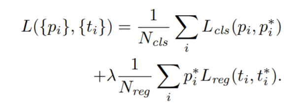
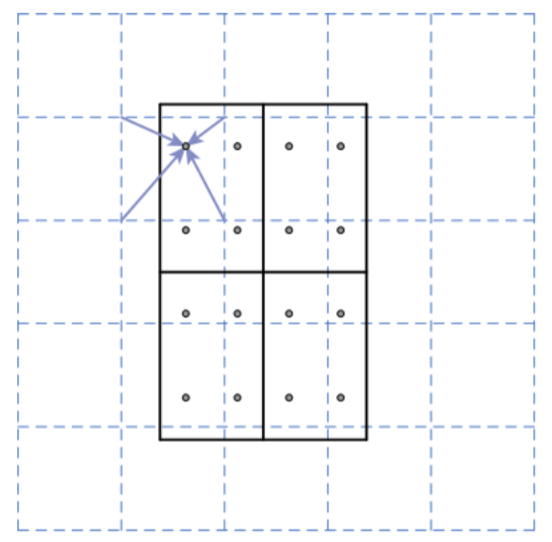

Faster RCNN
Table of Contents
1 Faster RCNN
1.1 Region Proposal Network
1.1.1 anchor
对于 MxM 的 feature map, 使用 3x3 的 window 提前生成 N*9 个不同大小和长宽比的 anchor box.
1.1.2 output
MxM feature map 被交给两个独立的 conv 处理:
- classification, 用来判断 anchor box 是否有物体
- regression, 用来输出 region 的 bounding box
1.1.3 label
训练时需要先 assign label
- classification, 这个相当于 yolo 中 objectness confidence
- 如果 anchor box 和 gt_box 的 IOU > 0.7, 标记为 1
- 如果 anchor box 和 gt_box 的 IOU < 0.3, 标记为 -1
- 其它的 anchor box 不参与 loss 计算
regression
如果 classfication label 为 1, 则把 gt_box 的坐标做为 anchor box 的坐标 的 label
1.1.4 loss

- \(p_i\) 是 classfication 输出
- \(p_i^*\) 来自 classfication 的 label: 当 label = -1 时, \(p_i^*=0\), 当 label = 1 时, \(p_i^*=1\)
- \(t_i\) 是 regression 的输出
- \(t_i^*\) 是 regression 的 label
计算 loss 时首先需要过滤掉 label 为 0 的 anchor box, 然后计算 regression loss 时只会考虑 \(p_i^*=1\) 的 anchor box, 因为 \(p_i^*=0\) 的 anchor box 没有和 box 对应, 不包含 bounding box 的 label
Backlinks
SSD (SSD > anchor): ssd 的 anchor 参考了 Region Proposal Network, 但不包含 objectness confidence.
YOLO (YOLO > Some Thoughts > Why Cell/Anchor): anchor 的思想来源到 Region Proposal Network.
1.2 ROIPooling
通过 RPN 得到 region 后, 后面需要做 classification, 即判断这个 region 里具体是什 么物体.
在实践中, 并非所有的 rpn region 都会参与 roi_pooling:
- 通过 NMS (threshold 为 0.7) 保留大约 2000 个 region (NMS 在 faster-rcnn 中进 行了两个, 一次在 rpn 之后, 另一次在输出最终结果时)
- 只选择 top-N 个 region
- 只选择 objectness confidence 超过一定 threshold 的 region
region 的尺寸是不确定的, 但 classifer 要求特定尺寸的输入, 有两种做法.
直观的做法可以是这样:
- 根据 region 从原始图片中截取一部分
- resize 成特定的尺寸
- 交给 classifier
但 faster rcnn 的做法是这样的:
- 把 region 缩放到 feature map 上
- 通过 roi pooling 得到特定尺寸的 feature map, 所谓的 roi pooling 实际上 GlobalAveragePooling 或 Spatial Pyramid Pooling 类似.
例如:
- 若输出是 10x10, roi_pooling(2,2) 会以 5x5 进行 pooling, 得到 2x2 的输出
- 若输出是 20x20, roi_pooling(2,2) 会以 10x10 进行 pooling, 同样得到 2x2 的输出
ROIPooling 实际相当于工作在 feature map 上的 resize
1.3 ROIAlign
roi_pooling 有两次取整的过程, 导致出现误差, 这种误差相当于一种量化误差.
- 需要把 region 缩放到 feature map 上, 如果不能整除, 会进行取整, 导致 region 出 现偏移
计算 pooling 的 stride 时需要取整, 例如 region 为 (9,9), pooling要求输出 (2,2), 则会产生下面的 pooling 分割结果
4 5 5 4
为了解决上面的问题, 提出 roi_allign 的方法, 计算坐标时保留小数, 但最后使用双线性 插值 (bilinear interpolation) 获得浮点数坐标上的像素值

- 上图最外层的框是 region proposal 的结果, 左上角为 (1.3, 0.9), 右下角为 (3.3, 4.1)
- 假设需要生成 (2,2) 的 pooling, 所以 stride 为 (1, 1.6) (即 (3.3-1.3)/2, (4.1-0.9)/2)
- 左上角的小框的坐标为 (1.3, 0.9), (2.3, 2.5)
- 在左上角小框平均采样 4 个点 A, B, C, D (4 是可以配置的常量), 取决于框的大小
- 左上角的 A 为 (1.633, 1.433)
- 取和 A 相邻的四个点 (1,1), (1,2), (2,1), (2.2), 通过 bilinear interpolation 计算出 A 的值
- 对 B, C, D 进行同样的操作, 然后计算 A, B, C, D 的 max 做为 pooling 的结果
- 对另外三个小框做同样的操作
1.4 Selective Search
Selective Search for Object Recognition 2012
https://www.geeksforgeeks.org/selective-search-for-object-detection-r-cnn/
faster rcnn 之前的 fast rcnn, rcnn 都是使用 selective serch 来生成 region proposal, 基本思想是:
基于图片本身的数据(颜色, 纹理等), 通过不断合并相近的小区域生成较大的 region proposal.
selective search 需要迭代执行, 速度非常慢, 基本需要 1~3 秒, 而 rpn 大约只需要 10ms
Backlinks
Object Detection (Object Detection > Faster RCNN): Faster RCNN